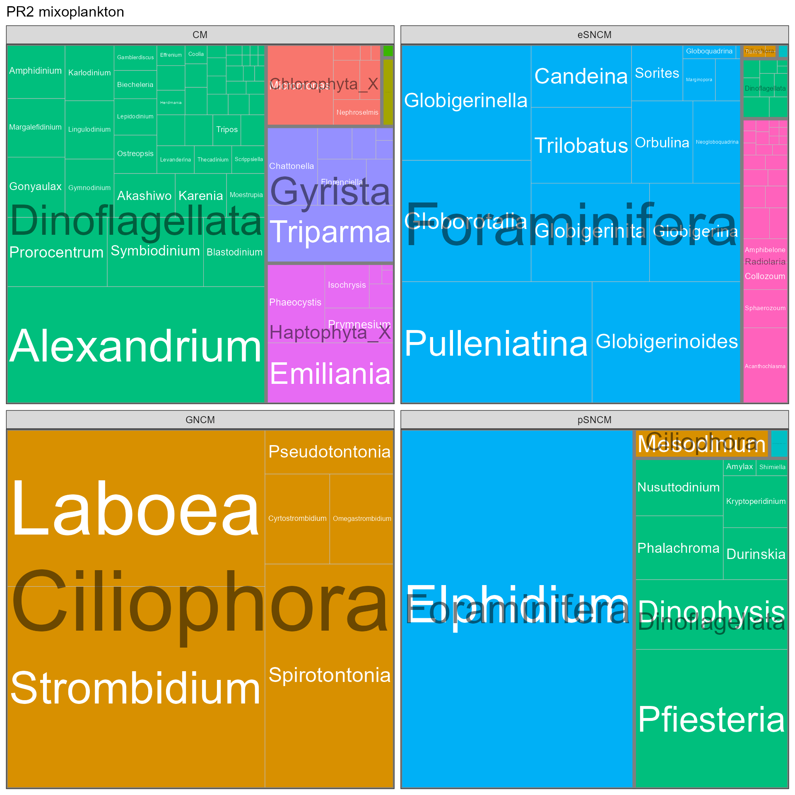
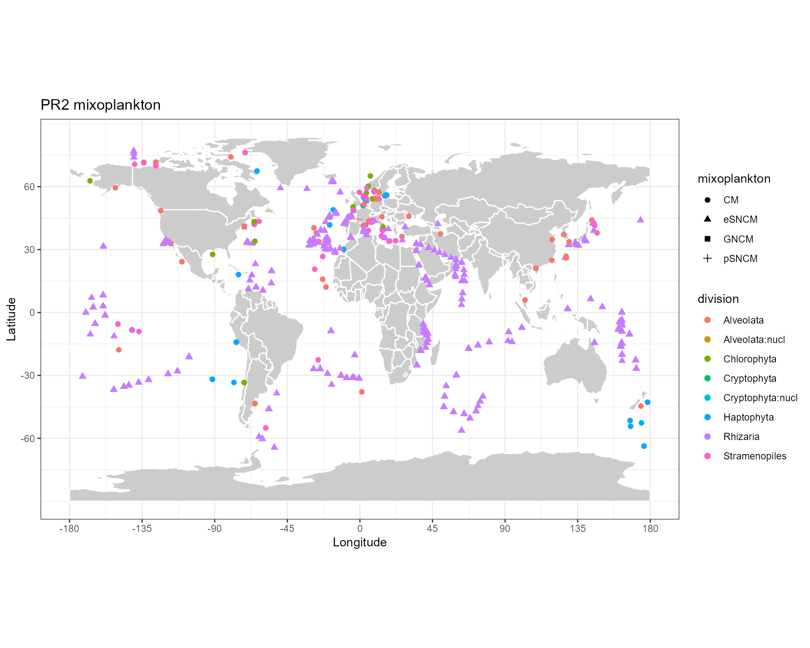

PR2 - MixoPlankton database
Daniel Vaulot
Source:vignettes/pr2_05_mixoplankton.Rmd
pr2_05_mixoplankton.RmdThe Mixoplankton Database (MDB, DOI 10.5281/zenodo.7560582) has been developed by Mitra et al. 2023 (https://doi.org/10.1111/jeu.12972).
It tabulates species that belong to the mixoplankton. This database
has been linked to the PR database which contains a new field called
mixoplankton
Values for this field are as follows:
- CM - Constitutive Mixoplankton
- GNCM - Generalist Non-Constitutive Mixoplankton
- pSNCM - plastidic Specialist Non-Constitutive Mixoplankton
- eSNCM - endosymbiotic Specialist Non-Constitutive Mixoplankton
In this small tutorial we explain how to access mixoplankton sequences from PR2.
Reference
- Mitra, Aditee, David A. Caron, Emile Faure, Kevin J. Flynn, Suzana Gonçalves Leles, Per J. Hansen, George B. McManus, et al. 2023. « The Mixoplankton Database – Diversity of Photo-Phago-Trophic Plankton in Form, Function and Distribution across the Global Ocean ». Journal of Eukaryotic Microbiology : e12972. https://doi.org/10.1111/jeu.12972.
# Loading the necessary packages
library("ggplot2")
library("dplyr")
library("tidyr")
library("DT")
library("forcats")
library("stringr")
library("treemapify")
library(patchwork)
library("pr2database")
packageVersion("pr2database")
#> [1] '5.0.0'
# Read the PR2 database
pr2 <- pr2_database() %>%
# Only keep 18S (do not consider plastids)
filter(gene == "18S_rRNA")Extracting from PR2 the mixoplankton sequences
pr2_mixopk <- pr2 %>%
# Remove sequences for which we have no taxonomy from Silva
filter(!is.na(mixoplankton))
Total number of PR2 sequences belonging to mixoplankton : 3517
Number of sequences of mixoplankton for each type at genus level
# Define a function for treemaps
pr2_treemap <- function(pr2, level1, level2) {
# Group
pr2_class <- pr2 %>%
count(mixoplankton, {{level1}},{{level2}}) %>%
filter(!is.na({{level2}})) %>%
ungroup()
# Do a treemap
ggplot(pr2_class, aes(area = n, fill = {{level2}},
subgroup = {{level1}}, label = {{level2}})) +
treemapify::geom_treemap()
ggplot(pr2_class, aes(area = n, fill= {{level1}},
subgroup = {{level1}}, label = {{level2}})) +
treemapify::geom_treemap() +
treemapify::geom_treemap_text(colour = "white",
place = "centre", grow = TRUE) +
treemapify::geom_treemap_subgroup_border() +
treemapify::geom_treemap_subgroup_text(place = "centre", grow = T,
alpha = 0.5, colour = "black",
min.size = 0) +
theme_bw() +
scale_color_brewer() +
guides(fill = FALSE) +
facet_wrap(~ mixoplankton, ncol=2)
}
g1 <- pr2_treemap(pr2_mixopk, subdivision, genus) +
labs(title = "PR2 mixoplankton")
g1
Localisation of mixoplankton sequences
map_get_world <- function(resolution="coarse"){
# Change to "coarse" for global maps / "low" for regional maps
worldMap <- rworldmap::getMap(resolution = resolution)
world.points <- fortify(worldMap)
world.points$region <- world.points$id
world.df <- world.points[,c("long","lat","group", "region")]
}
map_world <- function(color_continents = "grey80",
color_borders = "white",
resolution = "coarse") {
# Background map using the maps package
# world.df <- map_data("world")
world.df <- map_get_world(resolution)
map <- ggplot() +
geom_polygon(data = world.df,
aes(x=long, y = lat, group = group),
fill=color_continents,
color=color_borders) +
# scale_fill_manual(values= color_continents , guide = FALSE) +
scale_x_continuous(breaks = (-4:4) * 45) +
scale_y_continuous(breaks = (-2:2) * 30) +
xlab("Longitude") + ylab("Latitude") +
coord_fixed(1.3) +
theme_bw()
# species_map <- species_map + coord_map () # Mercator projection
# species_map <- species_map + coord_map("gilbert") # Nice for the poles
return(map)
}
map_world() +
geom_point(data=pr2_mixopk,
aes(x=pr2_longitude, y=pr2_latitude, color=division, shape = mixoplankton),
size=2) +
ggtitle("PR2 mixoplankton") 